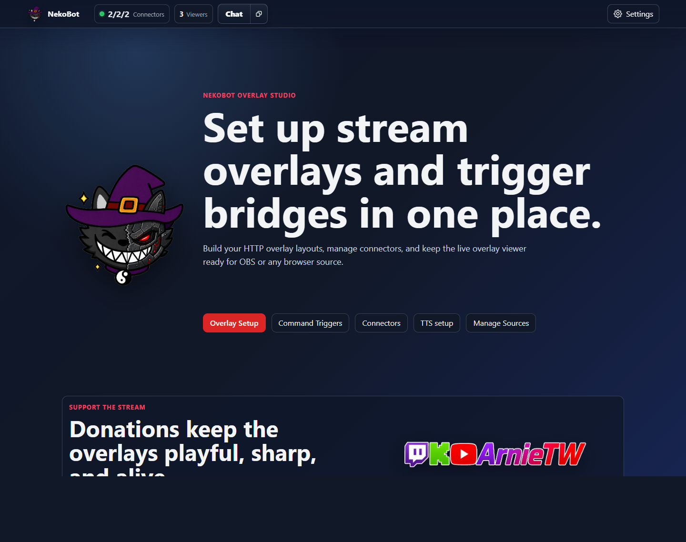
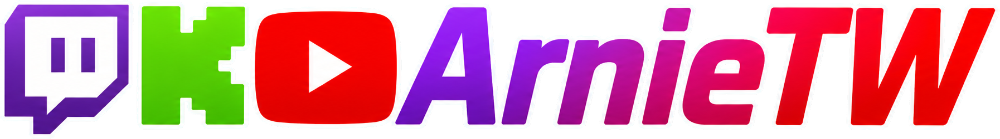

HTTP Overlays
Create one full-scene browser overlay in OBS, then place triggered boxes inside it for stream effects.
Streaming overlay companion
NekoBot provides browser-source overlays for tools like OBS, Streamer.bot integration, source management, and optional local TTS support.
Create one full-scene browser overlay in OBS, then place triggered boxes inside it for stream effects.
Bind boxes to Streamer.bot events, commands, and actions, then show the selected meme, media cue, text, URL, or TTS source when a trigger arrives.
Configure overlays, sources, Streamer.bot, logs, and TTS from the local setup interface.
Download a release package, run NekoBot, then open the setup page from the tray menu. From there you can create one overlay for a stream scene, add boxes for different triggered effects, connect Streamer.bot, and copy the overlay URL into OBS.

Current Release
Loading the current changelog from GitHub Releases.
Links

For the full set of links, socials, updates, and where to find me, use the ArnieTW Linktree.